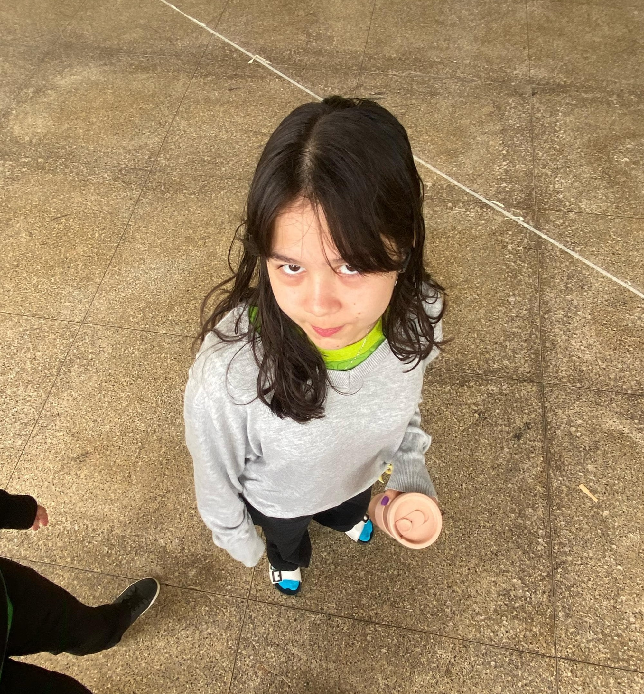

Eu me chamo Ana Paula Clemente Del Barco, nasci no dia 25 de novembro de 2008 (quem for me dar presente no meu aniversário ja ta sabendo 😝).
Sou aluna do IFRO Campus Vilhena do curso de Tec. Informática, ingressei no instituto no ano de 2024.
As aulas esse ano estão sendo mais complicadas e puxadas, principalmente nas materias de curso, que demandam mais esforço e atenção.
Uma curiosidade minha é que eu amo música e dança, sem brincadeira, acho que são as coisas que mais me atraem na vida, principalmente o romantismo que pode ser carregado com elas.